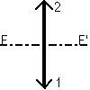
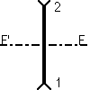

Cette page reprend l'aide d'OptGeo 3.03 (version pour ordinateur, à la souris). Dans la version web, on touche ou on clique au lieu de « cliquer deux fois » ; voir Utiliser OptGeo sur le web.
Lentille mince paraxiale

ou
(convergente ou divergente)Définition
Elle est définie par les points 1 et 2 et le foyer F (ou F', peu importe) (ou la focale f').
La lentille peut être ajoutée :
- en cliquant sur le bouton de la barre d'outils ayant la forme ci-dessus, puis en faisant un clic simple pour saisir le premier point, puis en faisant un clic simple pour saisir le second (ne pas maintenir le bouton de la souris enfoncé entre les deux points), puis un dernier clic pour saisir la position du foyer.
OU
- menu « Ajouter » puis « Système optique idéal » puis « Lentille mince convergente » ou « Lentille mince divergente ». On donne alors les coordonnées des points 1 et 2, puis la valeur de la focale.
Options
On peut imposer
- que l'axe focal soit tracé ou non
- l'épaisseur et la couleur du trait représentant la lentille à l'écran
- la couleur du trait représentant l'axe focal à l'écran
Ces propriétés peuvent être rendues accessibles :
- à la construction de la lentille si on passe par le menu « Ajouter »
- à tout instant en cliquant sur le bouton « Propriétés » de la barre d'outils, puis en cliquant sur un des cercles bleus qui apparaissent sur l'élément dont on veut obtenir les propriétés ; ne pas oublier à la fin de cliquer sur le bouton « Fin prop. » de la barre d'outils pour quitter le mode propriétés.
Divers
Comme la lentille est représentée à l'écran par son schéma conventionnel plan, les normales et angles ne peuvent être affichés sur sa surface. Comme c'est une idéalisation d'une lentille réelle, les surfaces d'onde issues d'une source ponctuelle ou plane ne pourront être tracées si une telle lentille fait partie de la simulation.
À noter que les rayons suivent les règles habituelles de tracé des lentilles minces, même s'ils ne sont pas paraxiaux...